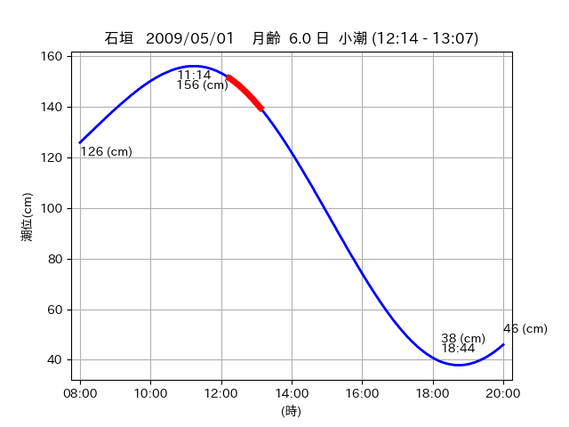

<!DOCTYPE html>
<html>
<head>
    
    <meta http-equiv="content-type" content="text/html; charset=UTF-8" />
    
        <script>
            L_NO_TOUCH = false;
            L_DISABLE_3D = false;
        </script>
    
    <style>html, body {width: 100%;height: 100%;margin: 0;padding: 0;}</style>
    <style>#map {position:absolute;top:0;bottom:0;right:0;left:0;}</style>
    <script src="https://cdn.jsdelivr.net/npm/leaflet@1.9.3/dist/leaflet.js"></script>
    <script src="https://code.jquery.com/jquery-3.7.1.min.js"></script>
    <script src="https://cdn.jsdelivr.net/npm/bootstrap@5.2.2/dist/js/bootstrap.bundle.min.js"></script>
    <script src="https://cdnjs.cloudflare.com/ajax/libs/Leaflet.awesome-markers/2.0.2/leaflet.awesome-markers.js"></script>
    <link rel="stylesheet" href="https://cdn.jsdelivr.net/npm/leaflet@1.9.3/dist/leaflet.css"/>
    <link rel="stylesheet" href="https://cdn.jsdelivr.net/npm/bootstrap@5.2.2/dist/css/bootstrap.min.css"/>
    <link rel="stylesheet" href="https://netdna.bootstrapcdn.com/bootstrap/3.0.0/css/bootstrap-glyphicons.css"/>
    <link rel="stylesheet" href="https://cdn.jsdelivr.net/npm/@fortawesome/fontawesome-free@6.2.0/css/all.min.css"/>
    <link rel="stylesheet" href="https://cdnjs.cloudflare.com/ajax/libs/Leaflet.awesome-markers/2.0.2/leaflet.awesome-markers.css"/>
    <link rel="stylesheet" href="https://cdn.jsdelivr.net/gh/python-visualization/folium/folium/templates/leaflet.awesome.rotate.min.css"/>
    
            <meta name="viewport" content="width=device-width,
                initial-scale=1.0, maximum-scale=1.0, user-scalable=no" />
            <style>
                #map_bb09ac8a1d7fc6514c5d65e7229f81cc {
                    position: relative;
                    width: 2048.0px;
                    height: 1600.0px;
                    left: 0.0%;
                    top: 0.0%;
                }
                .leaflet-container { font-size: 1rem; }
            </style>
        
</head>
<body>
    
    
            <div class="folium-map" id="map_bb09ac8a1d7fc6514c5d65e7229f81cc" ></div>
        
</body>
<script>
    
    
            var map_bb09ac8a1d7fc6514c5d65e7229f81cc = L.map(
                "map_bb09ac8a1d7fc6514c5d65e7229f81cc",
                {
                    center: [24.277, 123.748],
                    crs: L.CRS.EPSG3857,
                    ...{
  "zoom": 12,
  "zoomControl": true,
  "preferCanvas": false,
}

                }
            );

            

        
    
            var tile_layer_4f616c32a76871313c047eff8df865f9 = L.tileLayer(
                "https://cyberjapandata.gsi.go.jp/xyz/seamlessphoto/{z}/{x}/{y}.jpg",
                {
  "minZoom": 0,
  "maxZoom": 18,
  "maxNativeZoom": 18,
  "noWrap": false,
  "attribution": "\u5730\u7406\u9662\u5730\u56f3",
  "subdomains": "abc",
  "detectRetina": false,
  "tms": false,
  "opacity": 1,
}

            );
        
    
            tile_layer_4f616c32a76871313c047eff8df865f9.addTo(map_bb09ac8a1d7fc6514c5d65e7229f81cc);
        
    
            var marker_5e7e62d60a0fe165c86c4780be041de8 = L.marker(
                [24.2837, 123.6759],
                {
}
            ).addTo(map_bb09ac8a1d7fc6514c5d65e7229f81cc);
        
    
            var icon_e903b9dfc053efa34ccc02b798001bef = L.AwesomeMarkers.icon(
                {
  "markerColor": "orange",
  "iconColor": "white",
  "icon": "info-sign",
  "prefix": "glyphicon",
  "extraClasses": "fa-rotate-0",
}
            );
        
    
        var popup_51058020c3bb78b894f5b94a718924f2 = L.popup({
  "maxWidth": "100%",
});

        
            
                var html_9de3ce4026dbbfb2c33f07274a6f747a = $(`<div id="html_9de3ce4026dbbfb2c33f07274a6f747a" style="width: 100.0%; height: 100.0%;"><table><tr><td></td></tr><tr><td><center>20090501 No.1 </center></table></td></tr></table</div>`)[0];
                popup_51058020c3bb78b894f5b94a718924f2.setContent(html_9de3ce4026dbbfb2c33f07274a6f747a);
            
        

        marker_5e7e62d60a0fe165c86c4780be041de8.bindPopup(popup_51058020c3bb78b894f5b94a718924f2)
        ;

        
    
    
                marker_5e7e62d60a0fe165c86c4780be041de8.setIcon(icon_e903b9dfc053efa34ccc02b798001bef);
            
    
            var poly_line_259edaacc4ce3c11b8c71ec2f73edd68 = L.polyline(
                [[24.2837, 123.6759], [24.2884, 123.6714]],
                {"bubblingMouseEvents": true, "color": "#FF00FF", "dashArray": null, "dashOffset": null, "fill": false, "fillColor": "#FF00FF", "fillOpacity": 0.2, "fillRule": "evenodd", "lineCap": "round", "lineJoin": "round", "noClip": false, "opacity": 1.0, "smoothFactor": 1.0, "stroke": true, "weight": 3}
            ).addTo(map_bb09ac8a1d7fc6514c5d65e7229f81cc);
        
    
            var marker_431d70739699e1d8c6a6ea8b8ca84140 = L.marker(
                [24.2893, 123.6713],
                {
}
            ).addTo(map_bb09ac8a1d7fc6514c5d65e7229f81cc);
        
    
            var icon_35adfc1b664a29bae76f1a2cdd2e1197 = L.AwesomeMarkers.icon(
                {
  "markerColor": "orange",
  "iconColor": "white",
  "icon": "info-sign",
  "prefix": "glyphicon",
  "extraClasses": "fa-rotate-0",
}
            );
        
    
        var popup_7f8e4d56510b18e8d9678cec422003e3 = L.popup({
  "maxWidth": "100%",
});

        
            
                var html_1f702c521522e76769b94c10b0ec988f = $(`<div id="html_1f702c521522e76769b94c10b0ec988f" style="width: 100.0%; height: 100.0%;"><table><tr><td></td></tr><tr><td><center>20090501 No.2 </center></table></td></tr></table</div>`)[0];
                popup_7f8e4d56510b18e8d9678cec422003e3.setContent(html_1f702c521522e76769b94c10b0ec988f);
            
        

        marker_431d70739699e1d8c6a6ea8b8ca84140.bindPopup(popup_7f8e4d56510b18e8d9678cec422003e3)
        ;

        
    
    
                marker_431d70739699e1d8c6a6ea8b8ca84140.setIcon(icon_35adfc1b664a29bae76f1a2cdd2e1197);
            
    
            var poly_line_fd62819ec3bfe36a5abc94ae2e6a7006 = L.polyline(
                [[24.2893, 123.6713], [24.2935, 123.6686]],
                {"bubblingMouseEvents": true, "color": "#FF00FF", "dashArray": null, "dashOffset": null, "fill": false, "fillColor": "#FF00FF", "fillOpacity": 0.2, "fillRule": "evenodd", "lineCap": "round", "lineJoin": "round", "noClip": false, "opacity": 1.0, "smoothFactor": 1.0, "stroke": true, "weight": 3}
            ).addTo(map_bb09ac8a1d7fc6514c5d65e7229f81cc);
        
    
            var marker_bc6d3e1860d376d0faa9925e6307639f = L.marker(
                [24.2763, 123.7495],
                {
}
            ).addTo(map_bb09ac8a1d7fc6514c5d65e7229f81cc);
        
    
            var icon_6b4cfbc4b1811bd510b50be438c1e0a7 = L.AwesomeMarkers.icon(
                {
  "markerColor": "orange",
  "iconColor": "white",
  "icon": "info-sign",
  "prefix": "glyphicon",
  "extraClasses": "fa-rotate-0",
}
            );
        
    
        var popup_bc3d28097a954217c96e40b4fd53dd90 = L.popup({
  "maxWidth": "100%",
});

        
            
                var html_9b1bc53a0b7729fbe365895c80825ed1 = $(`<div id="html_9b1bc53a0b7729fbe365895c80825ed1" style="width: 100.0%; height: 100.0%;"><table><tr><td></td></tr><tr><td><center>20090501 No.3 </center></table></td></tr></table</div>`)[0];
                popup_bc3d28097a954217c96e40b4fd53dd90.setContent(html_9b1bc53a0b7729fbe365895c80825ed1);
            
        

        marker_bc6d3e1860d376d0faa9925e6307639f.bindPopup(popup_bc3d28097a954217c96e40b4fd53dd90)
        ;

        
    
    
                marker_bc6d3e1860d376d0faa9925e6307639f.setIcon(icon_6b4cfbc4b1811bd510b50be438c1e0a7);
            
    
            var poly_line_2b9fa527ce0e4d860f1274917c2bad27 = L.polyline(
                [[24.2763, 123.7495], [24.278, 123.746]],
                {"bubblingMouseEvents": true, "color": "#FF00FF", "dashArray": null, "dashOffset": null, "fill": false, "fillColor": "#FF00FF", "fillOpacity": 0.2, "fillRule": "evenodd", "lineCap": "round", "lineJoin": "round", "noClip": false, "opacity": 1.0, "smoothFactor": 1.0, "stroke": true, "weight": 3}
            ).addTo(map_bb09ac8a1d7fc6514c5d65e7229f81cc);
        
</script>
</html>